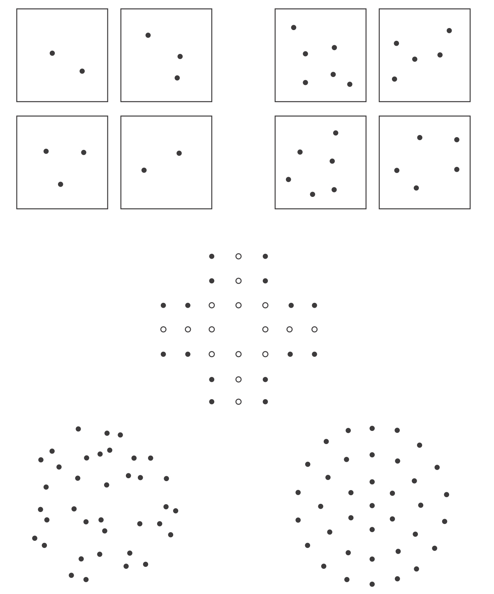

达斯汀·霍夫曼（Dustin Hoffman）在影片《雨人》（Rain Man）中扮演的雷蒙（Raymond），是一位具有惊人能力的孤独症患者，影片中发生了一起特殊事件。一位服务员掉了一盒牙签在地上，雷蒙马上咕哝道：“82……82……82……有246根！”仿佛他以82为单位来数牙签，比我们说“二二得四”还要快。在第6章，我们将会仔细分析哪些技艺造就了诸如雷蒙这样的计算奇才。然而，在这里，我并不认为达斯汀·霍夫曼的表演应该被当真。有些轶事报道了一些能够快速感数的孤独症患者，但是并没有给出他们的反应时。据我所知，反应时能够用于判断这些人是否确实在数数。我自己的经验是，要模拟《雨人》的场景很容易：提前开始数数，把各组点数在心里相加，然后以一种虚张声势的方式说出来。以这样的方式，猜准一次屋内的确切人数就足以使你成为传奇！更有可能的其实是，3个或者4个项目作为感数极限对于每个人来说都是一样的。
但是，这一极限的实质究竟是什么？当一个集合内元素多于3个时，我们的并行计数能力真的会瘫痪吗？达到这个临界值时，我们就必须去数吗？事实上，任何成人都可以在一个合理的不确定范围内估计超过3或4的数值9。因此，这个感知极限并不是一道不可逾越的障碍，而仅仅是个边界，超过它就进入了近似估计的世界。面对一群人时，我们可能不知道确切的人数是81个、82个还是83个，但是我们可以不通过数数而估计有80到100个人。
这样的估计通常是有效的。心理学家明确知道，在一些情况下，人类的估计值会稳定地偏离真实值（见图3-3）。例如，当物品规则地布满一张纸的时候，我们会倾向于高估其数量；相反，当物品不规则分布的时候，我们会低估其数量，这也许是因为我们的视觉系统把它们分解成了数个小集合10。我们的估计对环境影响也很敏感：同样是30个点，我们会因为其周围分布着10个点而低估其数量，也会因为其周围分布着100个点而高估其数量。但是一般来说，我们的估计其实非常准确，尤其是考虑到，在日常生活中我们很少有机会能够验证其正确性。确实，有关一群人是由100人、200人还是500人组成的，我们有多少机会能得到精确反馈呢？然而，在一个实验室条件下所做的实验中发现：只要向我们提供一次数量信息确定的材料，比如明确标记为200个点的集合，就足以提高我们对于点数在10到400个之间的集合的数量估计的准确性11。想要校准我们的数字估算系统，只需要少数几次精确的测量。

我们能够立即察觉到2个和3个（左上）之间的区别，但是如果不数数，我们较难区分5个和6个（右上）。我们对大数字的知觉依赖于物品的密度、占据的面积和空间分布的规则程度。尤塔·弗里思（Uta Frith）和克里斯托弗·弗里思（Christopher Frith）于1972年首次描述了中图所呈现的“宝石错觉”：我们的感知系统使我们错误地相信，中间的图中白点比黑点多，大概是因为白点被更紧密地组织在一起。下方的两张图中，随机分布的点看起来要比间隔规则的点少一些，而实际上这两幅图中都有37个点。
图3-3 人类的估计值会稳定地偏离真实值
人类知觉大数字的规律并不特殊，而是与动物数字行为所遵循的规律完全相同12。我们受制于距离效应：相比于差距较小的数值，如81与82，我们更容易区分差距较大的数值，如80与100。我们的数量知觉也表现出大小效应：对于相同差距的两个数值，相比于数值较小的情况，如10与20，我们更难区别数值较大的两个数，如90与100。
这些规律是心理学不同寻常的一项发现，其揭示的数学规律性因屡试不爽而令人印象深刻。假定一个人能够区分13个点的集合和另一个10个点的参考集合（数字间距为3），准确率达到90%。现在让我们将参考集合的点数加倍，变成20个点，我们要选择距离这个数值多远的一个数字，才能使分辨的准确率仍能达到90%呢？答案非常简单，你只需要将数字间距也加倍，让两个集合的点数相差6。因此该集合应该有26个点。当参考数字加倍，人们能够以同样的水准实现辨别的数字间距也同样加倍。这一加倍法则也被称为“梯度定律”（scalar law），或者“韦伯定律”（Weber’s law），以发现这一规律的德国心理学家命名。这一定律与动物行为规律的显著相似性表明，就数量的近似知觉这一点而言，人类与老鼠或鸽子没有任何不同。我们所有的数学天赋在感知和估计大数字时都毫无用处。